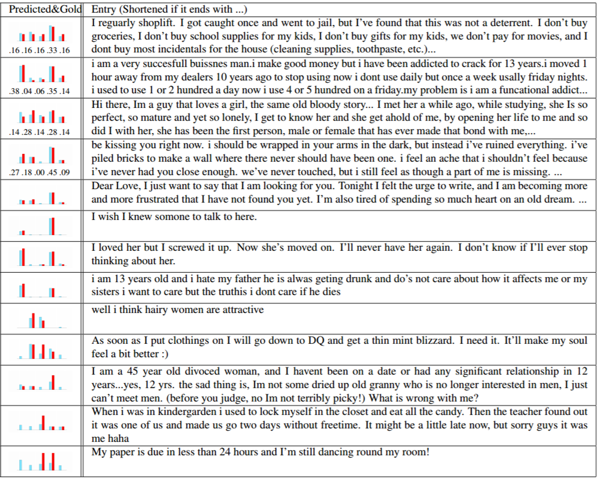

Sentiment Analysis
This page continues from the previous page on recursive autoencoders.1 Phrase Representations using Recursive Autoencoders

We start with a phrase, and use a recursive autoencoder to produce a vector representation. This method follows naturally from the previous page, with the followin ammendments: our sequence of elements is now an ordered sequence of words. Concretely, we have the sequence $\left(\mathbf{x}_{1},\dots,\mathbf{x}_{m}\right)$ where each $\mathbf{x}_{i}$ is the vector representation of the $i$th word of a phrase made up of $m$ words. [1]
2 Semi-Supervised Recursive Autoencoders
We now use our recursive autoencoder to attempt to predict a sentiment label. It is fairly easy to predict a probability distribution over the possible labels, by applying a simple softmax layer:
where $\mathbf{p}$ is a given parent vector. The softmax layer applies a statistic method (specifically a generalization of logistic regression to handle more than two classes), to return the required probability distribution estimate, $\mathbf{d}$. Concretely, given $K$ labels, $\mathbf{d}\in\mathbb{R}^{K}$ and $\sum_{k=1}^{K}\mathbf{d}_{k}=1$. [2]
We also have a target distribution $\mathbf{t}$. This is the ‘correct’ probability distribution, that we are aiming to learn. This means we are able to calculate a cross-entropy error, that will decrease as the predicted distribution $\mathbf{d}$ and the target distribution $\mathbf{t}$ become more similar. [3]
Note that we could have a simple case where $K=2$ and the set of labels includes only ‘good’ and ‘bad’. This type of labelling is very common, making implementation easier. We could also have a significantly more complicated set of labels, depending on what training data sets are available.
Training We start with a corpus of aligned (sentence, label) pairs $(\mathbf{x},\mathbf{t})$. During training, we minimise a cost function which is constructed as follows:
- We take into account an error for each entry in the training set, which is calculated from the sum over the errors at the non-terminal nodes of the tree constructed by the RAE:
$\sum_{(\mathbf{x},\mathbf{t})}\sum_{s\in\mbox{nodes}(\mbox{RAE}(x))}\alpha E_{\mbox{rec}}([\mathbf{c}_{1};\mathbf{c}_{2}]_{s})+(1-\alpha)E_{\mbox{CE}}(\mathbf{p}_{s},\mathbf{t})$ These errors in turn are calculated by adding the reconstruction error $E_{\mbox{rec}}$ (given on the previous page) to the cross entropy error $E_{\mbox{CE}}$ from the softmax regression layer. These two errors are weighted according to the value of the paramater α.
- We add to this the final reconstruction error for the full tree.
Learning can then be achieved by backpropogation using this cost function. [4]
Improvements There are still better methods for sentiment analysis, which usually take into account the syntax tree of a given phrase or sentence. These methods, however, do not usually involve autoencoders! [5]
3 Implementation

A Java implementation of this method can be found at https://github.com/sancha/jrae.
The following page discusses an extension of this model, allowing us to apply it to the problem of paraphrase detection.